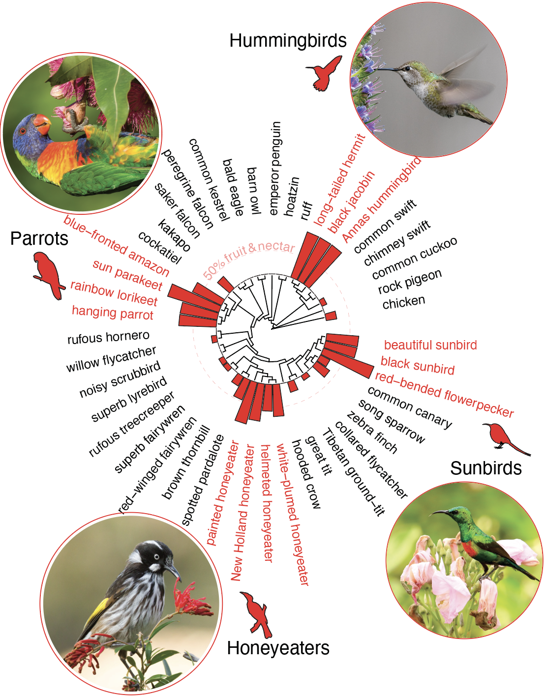
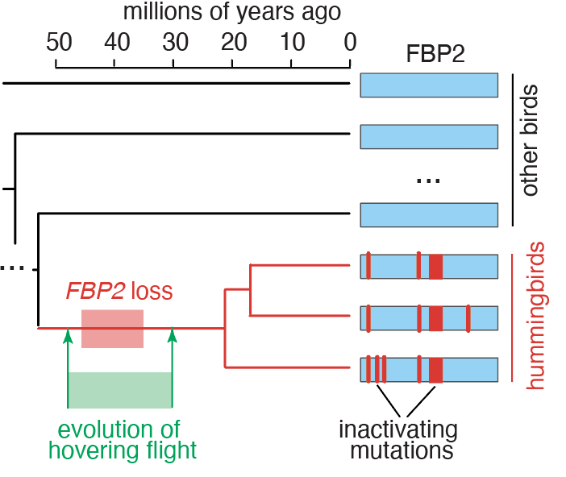
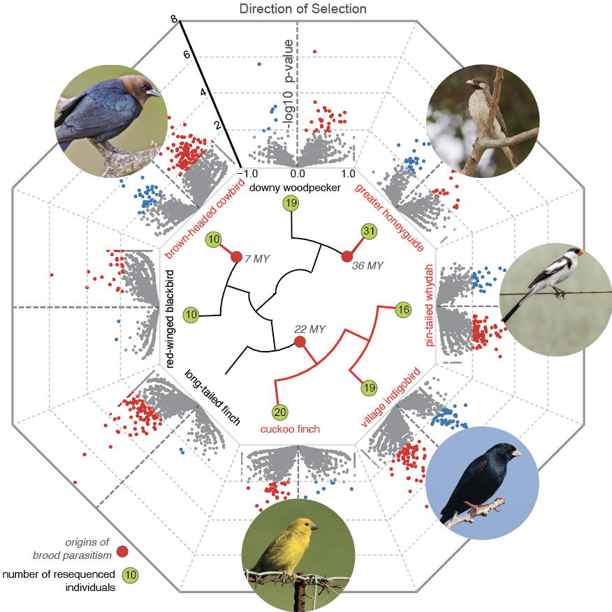

I am an evolutionary biologist decoding how evolution shapes phenotypic diversity. My passion lies in studying extreme animal phenotypes, particularly unique metabolic and behavioral adaptations, to uncover insights into human disease mechanisms. I combine computational work with experiments. Currently, I am a postdoc at Harvard University.
Research
Evolution of convergent metabolic adaptations
How had some birds adapted to consume excessive amounts of sugar while evading adverse consequences, like type 2 diabetes, obesity, and metabolic syndrome? Did independent bird lineages evolve similar molecular solutions to challenges associated with nectar feeding?
Comparative genomics | Positive selection | Transcriptomics | Transcription factors
Evolution of metabolic extremes
Hummingbirds have the highest metabolic rates among vertebrates and they are the only birds that evolved true hovering. What are the genomic underpinnings of these extreme metabolic adaptations?
Gene loss | Genome editing | Metabolic assays
Genomic drivers of radical life history transitions
Many animals care for their young, helping them survive. However, seven birds groups - brood parasites - evolved to exploit other species to raise their offspring. Which genomic changes allowed this radical life history transition? What are the genomic causes and consequences of brood parasitism?
Population genomics | Selective sweeps | McDonald-Kreitman test
Rational design of novel living systems with defined metabolic properties
Can we use genomics to inform synthetic biology approach and design living systems with defined metabolic properties?
Genome engineering | Machine Learning | LLMs